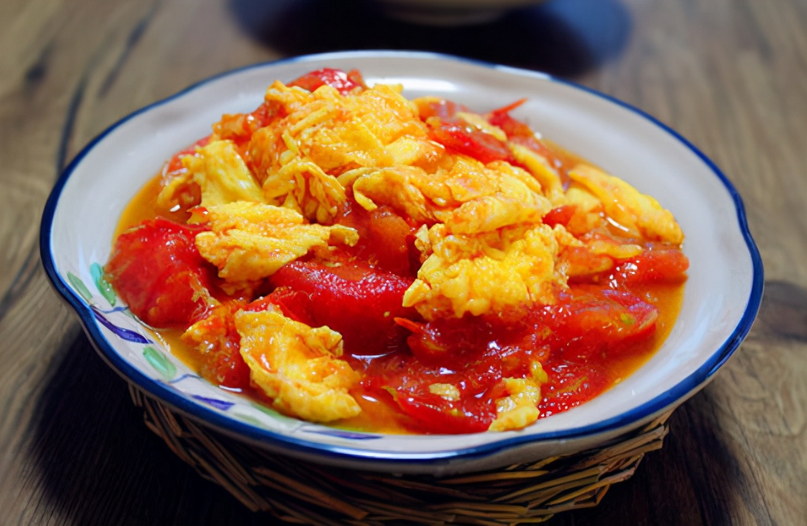

Introduction

Tomato and scrambled eggs is a easy dish to make, and is very common in Eastern China.
It is commonly made at home and in resturants. It has a sweet and sour taste fom the tomato and the color of the dish is red and golden, from the eggs and tomatoes.
Ingredients
For 1-2 people:
- 2 eggs
- 2 tomatoes
- 1 spoon of table salt
For 3-5 people:
- 4 eggs
- 3-4 tomatoes(depending on size)
- 2 & 1/2 spoons of table salt
Instructions
- Grab a frying pan and heat the pan until it is hot enough to evaporate water droplets whn you splash it in
- Pour oil in the pan and heat it up until it smokes (not black smoke).
- Mix the eggs in the bowl wiht a pair of chopstick or wisk
- Pour the eggs into the hot pan and stir them until it is goldn
- Take out the eggs and put them in a bowl
- Cut the tomatoes into small pieces and put them into the pan
- Let it fry for about 3 minutes, then mash the tomatoes with a spatula so the juice of the tomato comes out
- Scoop 1 spoon of table salt and mix the salt and tomamtoes together
- Put in the eggs and stir
- After it is all mix put it on a plate or bowl